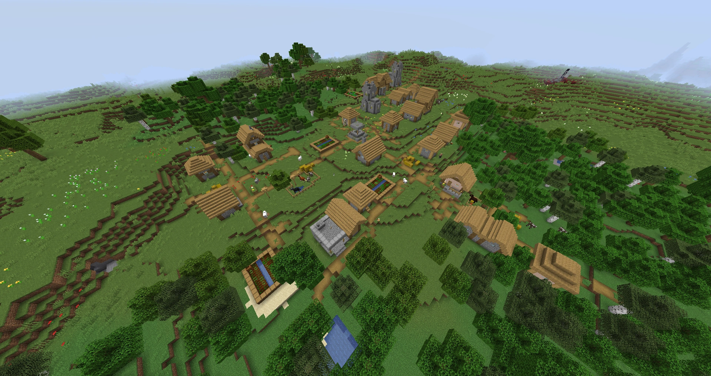
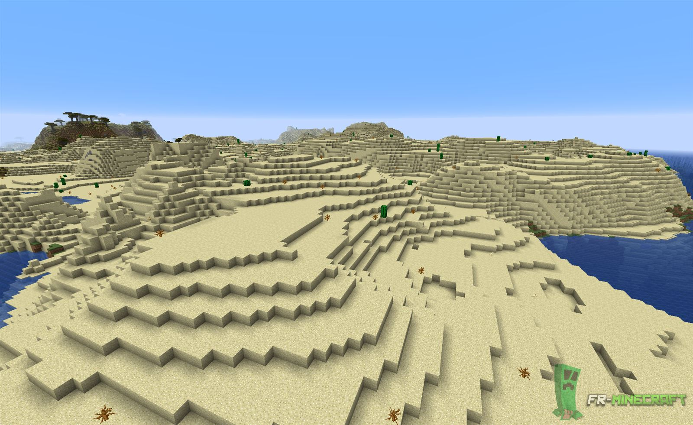
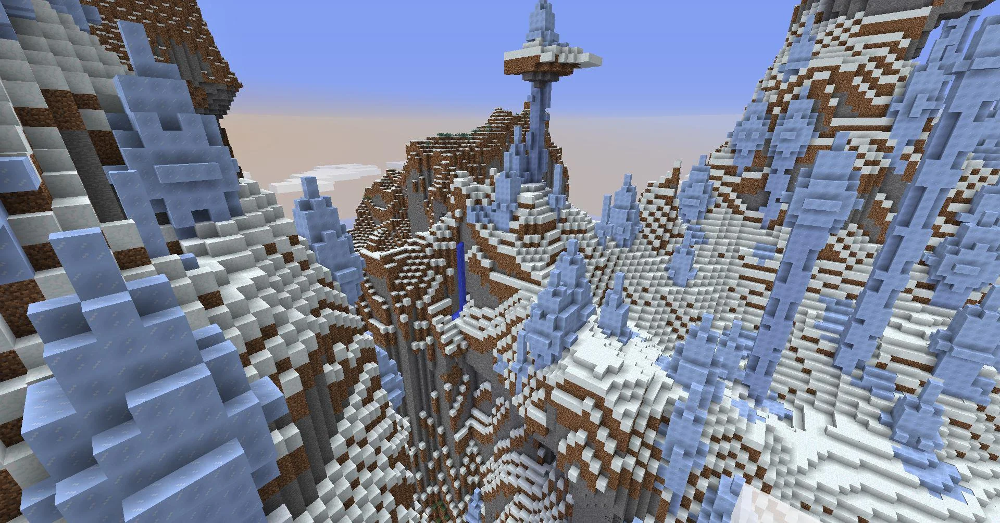

равнины
Равнины - это биом, в котором чаще спавнятся деревни. Здесь спавнятся большие лиственные деревья (дубы). Это самый частый биом. Равнины - это мой любимый биом.
пустыня
Пустыня - это биом, в котором спавнятся кактусы, но нет деревьев. Деревню в пустыне найти легче, чем в саванне. В пустынных деревнях спавнится больше сена, чем в равнинных. В пустынях часто можно найти пустынный храм, колодец и кроликов.
ледяные пики
Ледяные пики - это биом, в котором не спавнятся деревья и деревни, но есть огромные ледяные столбы. С небольшой вероятностью можно найти заброшенный портал. Здесь вас могут поджидать скелеты-зимогоры, стреляющие стрелами замедления.
тёплый океан

Тёплый океан - это океан, в котором есть разноцветные водоросли. Здесь спавнятся различные данжи, иногда целыми разрушенными городами. Можно найти подозрительный песок. Если по нему поводить кисточкой, то порой выпадает яйцо нюхача. Еще в теплом океане могут заспавниться утопленники, иногда с тризубцем.